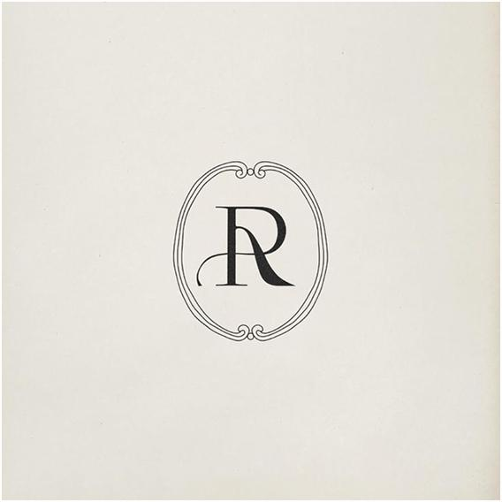
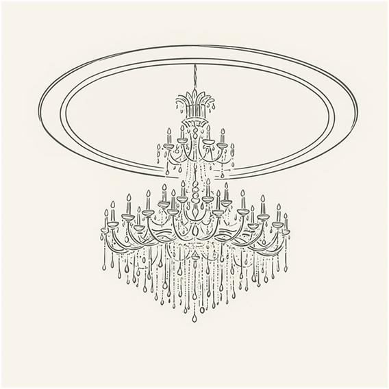
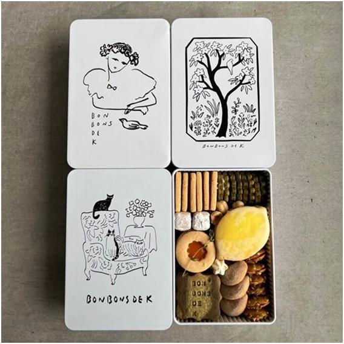
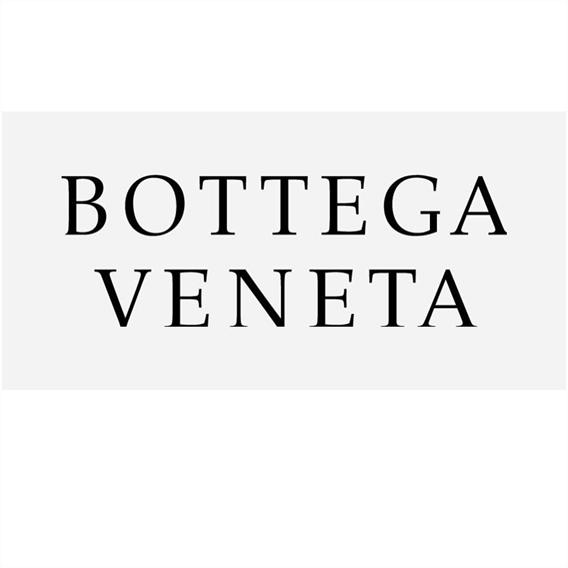
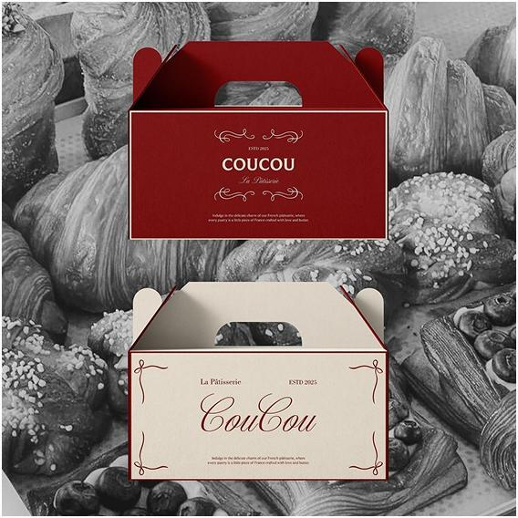
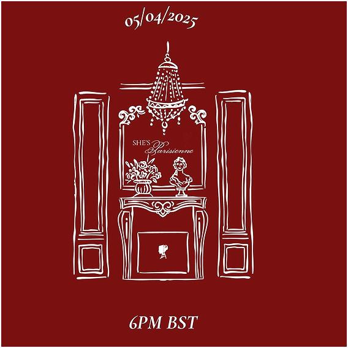
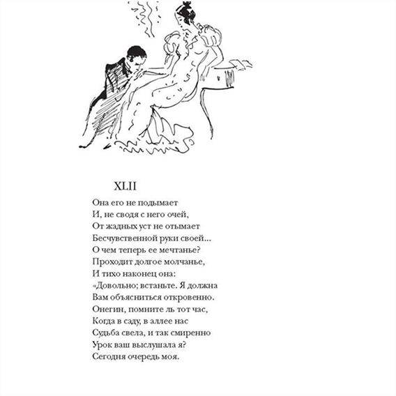

В основе — идея культурного наследия и вечной классики. Источник вдохновения — русская литература и настроение эпохи «Евгения Онегина». Не как иллюстрация произведения, а как характер: элегантность, утончённость, внимание к деталям и способность оставаться актуальным спустя десятилетия.

Бренд существует более десяти лет и заслужил доверие гостей, став частью городской культуры. Сегодня компания выходит на новый этап: расширение сети требует более сильного и выразительного образа — при этом важно сохранить ощущение качества, истории и уважения к собственным традициям.
Мы искали идею, которая позволит выделиться среди множества кондитерских со схожими решениями. Так появилась концепция литературной эстетики. Так же, как великие произведения остаются значимыми вне времени, бренд стремится создавать десерты, к которым хочется возвращаться снова и снова.
Большинство кондитерских используют привычные ассоциации: крем, сладости, иллюстрации выпечки, пастельные цвета. Мы предлагаем иной подход — и бренд начинает восприниматься не только как место покупки десертов, но как пространство со своим характером, историей и атмосферой.

гравюра
упаковка-объект
логотип-обложкаОснова айдентики — элементы классической графики: тонкие иллюстрации-гравюры, декоративные рамки, изящная типографика, литературные цитаты и орнаментальные виньетки. Каждый носитель становится страницей визуального повествования, а упаковка — частью истории бренда и коллекционным объектом, который хочется рассматривать и сохранять.

коробки · виньетки
полиграфияКонтрастные засечки создают ощущение благородства и вневременной актуальности. Лаконично. Уверенно. Элегантно.

«Так же, как великие строки остаются значимыми вне времени,
бренд создаёт десерты,
к которым хочется возвращаться
снова и снова.»
Фирменная графика строится вокруг литературных образов: авторские иллюстрации, архитектурные элементы эпохи, книжные орнаменты и сюжетные композиции. Меню, этикетка, открытка — каждый носитель превращается в страницу.
Красный добавляет выразительность и эмоциональность. Голубой — лёгкость и интеллигентность. Светлая база подчёркивает премиальность и оставляет графику главным акцентом. Сочетание выглядит одновременно классическим и современным.
Людям хочется соприкасаться с эстетикой, культурой и атмосферой, чувствовать, что за продуктом стоит нечто большее, чем производство. Именно поэтому концепция литературного наследия создаёт более глубокую эмоциональную связь с аудиторией.
Литература актуальна вне зависимости от времени — так и бренд получает образ, не зависящий от трендов. Вместо очередной кондитерской появляется бренд со своим культурным кодом: узнаваемый, интеллигентный, запоминающийся. Который вызывает интерес ещё до знакомства с продуктом. Не просто кондитерская — место, где классика встречается с современностью.